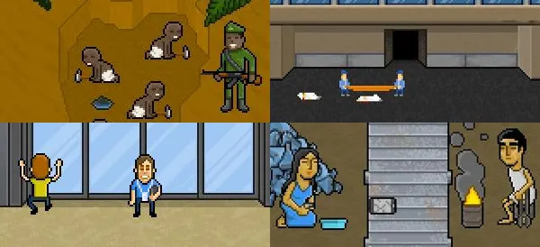

Device Production
Technology often feels clean because so much of it is small, sleek, and digital. But the devices we use every day have long environmental histories before they ever reach our hands. Smartphones, laptops, and other electronics require mining, manufacturing, shipping, and eventual disposal. That means the climate cost of technology is not just about using the device, but also about how often we replace it. The calculator below focuses on ownership and upgrade habits to show how the products themselves contribute to carbon emissions, resource extraction, and e-waste.
Interactive Technology Calculator
Adjust the sliders to estimate how your device ownership and upgrade habits contribute to manufacturing emissions and electronic waste.
Technology Inputs
1 = Rarely 3 = Sometimes 5 = Very Often
Your Estimated Impact
Estimated e-waste: 0 kg
Rare earth extraction score: 0
Device Breakdown
- Smartphones: 0 kg CO₂e
- Laptops: 0 kg CO₂e
- Upgrade pressure added: 0 kg CO₂e
Factors used (rough teaching averages):
Smartphone manufacturing ≈ 70 kg CO₂e each
Laptop/computer manufacturing ≈ 200 kg CO₂e each
Smartphone e-waste ≈ 0.2 kg each
Laptop/computer e-waste ≈ 2.5 kg each
Upgrade frequency adds an estimated multiplier to represent increased replacement habits
These values are simplified for comparison and awareness.
Discussion
Electronics are an essential part of everyday life, but the environmental costs of producing them are often hidden. Smartphones, laptops, and other digital devices require rare earth minerals and metals that must be mined from the Earth. These materials are transported across global supply chains and assembled in large manufacturing facilities before they ever reach consumers. While each device may feel small, billions of them are produced every year. One of the biggest environmental concerns is electronic waste, or e-waste. Many devices are replaced every few years even though they still function perfectly. When older devices are discarded they often end up in recycling or dumping sites where workers dismantle them to recover valuable metals, sometimes exposing themselves and nearby communities to toxic materials. The rapid release of new models also encourages people to upgrade frequently, creating a cycle of production and disposal. Understanding the full lifecycle of these products helps reveal the hidden environmental impact behind the technology we rely on every day.
"Phone Story" by Paolo Pedercini (Molleindustria)

Phone Story is an interactive artwork created by Paolo Pedercini through the studio Molleindustria. The project was originally released as a mobile game, but it functions more like a piece of media art that critiques the lifecycle of smartphones. The artwork walks players through several stages of phone production including rare earth mineral mining, factory labor, consumer purchasing, and electronic waste disposal. Each stage forces the player to participate in situations that reflect real-world systems. For example, one section shows workers mining materials under armed supervision while another shows factory workers assembling devices under intense pressure. The final stage focuses on discarded phones being dismantled in unsafe recycling environments. I chose this piece because it captures the entire lifecycle of modern electronics in a very simple but unsettling way. Smartphones often feel like clean and futuristic technology, but this artwork reminds us that they rely on global systems of extraction, manufacturing, and waste. It shows that every device we buy carries environmental consequences long before and long after we use it.